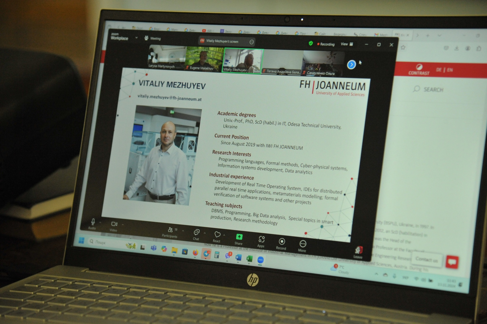
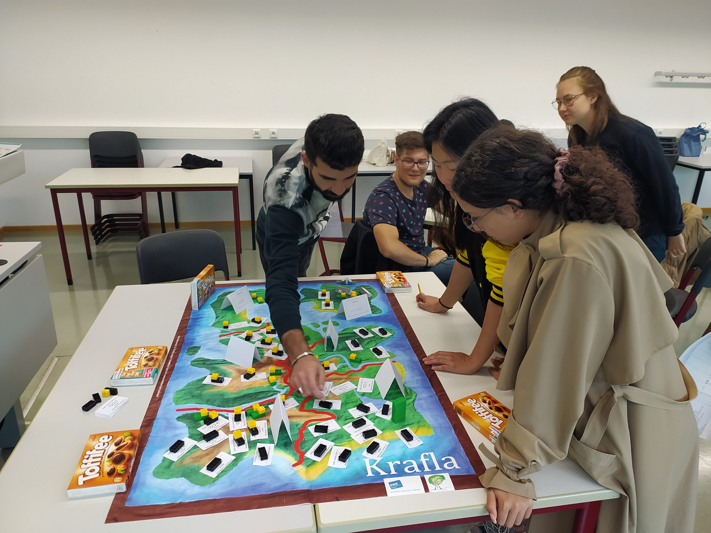

Новини
On-line лекція професора університету прикладних наук Fachhochschule JOANNEUM (місто Капфернберг, Австрія), доктора технічних наук Віталія Межуєва.
Для студентів IT- спеціальностей ОНУ імені Мечникова, що навчаються на факультеті математики, фізики та інформаційних технологій,13.11.2024 р. у Великій фізичній аудиторії відбулась on-line лекція професора університету прикладних наук Fachhochschule JOANNEUM (місто Капфернберг, Австрія), доктора технічних наук Віталія Межуєва.
Професор В. Межуєв представив можливості FH JOANNEUM щодо забезпечення досліджень та навчального процесу, зокрема, «Лабораторію Розумного Виробництва» (The Smart Production Lab). Вiн розповів про проєкти та напрями досліджень дослідницької групи цифрових технологій (Research Group Digital Technologies), яку очолює у FH JOANNEUM.
Професор навів приклади магістерських досліджень, що виконують студенти на базі лабораторії, та запросив до участі у відповідних європейських та австрійських програмах (наприклад, Financial support for Ukrainian tech start-ups Support Programmes – UASEEDs) з його підтримкою як професора FH JOANNEUM. Спiкер вільно володіє п’ятьма мовами, лекцію було прочитано англійською, «робочою» мовою IT-фахівців. Наприкінці лекції професор відповів на питання студентів.
Гостьову лекцію для студентiв ФМФIТ ОНУ Мечникова органiзували заступник декана ФМФІТ Мартинович Лариса Ярославівна та професор Малахов Євгеній Валерійович.
Літня школа SustainMV
В серпні-вересні 2024 року відбудеться літня школа SustainMVі.
SustainMV – літня школа сталого розвитку – цього року відбудеться вже вчетверте! За останні три роки вона прийняла понад 620 учасників у онлайн-форматі.
SustainMV, цей унікальний захід, спільно організований регіоном вищих навчальних закладів округу Мекленбург-Передня Померанія. Головною темою є сталий розвиток у сферах туризму, відновлюваних джерел енергії, цифрових і технологічних інновацій, переробки та управління відходами, екосистем і соціальної стійкості, демонструючи можливості для трансформації через науку та освіту для сталого майбутнього. Мета полягає в тому, щоб представити північно-східну Німеччину як фантастичне місце для сталого розвитку освіти, досліджень і бізнесу.
Школа SustainMV проходитиме з 3 по 13 вересня. Їй передує триденне онлайн-ознайомлення з предметом з 27 по 29 серпня.
Кінцевий термін подачі заявки – 14 квітня.
Для отримання детальної інформації відвідайте веб-сайт https://sustainmv.de/